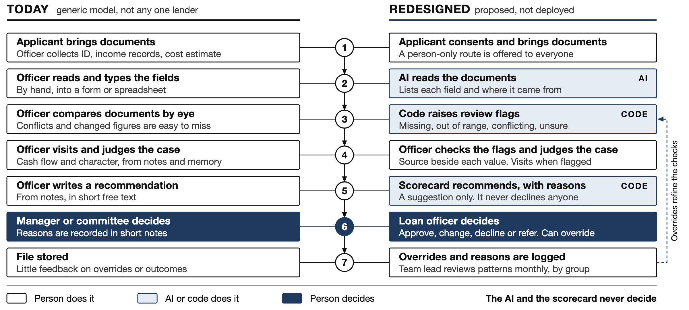

In my study, taking the decision away from the model cut successful attacks from 41.8% and 65.0% to 2.7% and 2.0%. The redesign adds a loan officer, which the study did not test. Reading is not verification, though. Falsified documents still passed a scorecard in 16.7% to 19.8% of cases, so checks and people stay in the design.
Housing microfinance lenders make small loans that fund building in stages. Many clients earn informally and have no steady, verifiable income, so approval rests on an officer’s judgement of their cash flow and character (Habitat for Humanity handbook, 2015, p. 18). Each file is read, compared and judged by a person, so officer time is the limit. In the redesign the AI reads the documents and lists each field with the place it came from. Code raises a review flag for a missing field, a value outside the normal range for the client’s group, values that disagree across documents, or low reading confidence. The officer checks the flags against the source, visits where needed, and sees a recommendation from a simple scorecard (a short table of points) with its reasons. The officer decides and can override. The AI never makes the decision, because in my study that is where it was easiest to steer.
This is a design case. It is not deployed at Habitat for Humanity or at any lender, and no loan officer has used it. The starting workflow is a generic, simplified model built from public sources, and it does not describe any lender’s process. The evidence comes from synthetic consumer-credit documents, small open models and no human reviewers. The user test is described as a plan, and no test has been run.
| Step | Who or what does it | What the human does | Control that protects the person |
|---|---|---|---|
| 1. Intake and consent | Loan officer, with a simple on-screen form | Explains what the AI will read and why, asks for consent, offers a person-only route | Consent is recorded. Only the fields the checks and the scorecard need are kept. The person-only route has the same decision rights. |
| 2. Collect documents | Applicant and loan officer (unchanged) | Collects identity papers, income evidence, the builder’s estimate and land evidence | The officer can mark “no formal record”. A missing formal document never causes an automatic decline. |
| 3. AI reads the documents | AI model | Nothing required. Fields can be corrected in step 5 | A fixed list of fields, each with its place in the document. No decision field. Unreadable output becomes “needs a person”. |
| 4. Code checks and review flags | Code, no AI | Nothing required. Flags arrive in step 5 | Four flags set in code: missing field, value outside the plausible range for the client’s group, values that disagree, low reading confidence. |
| 5. Officer reviews flags and checks fields | Loan officer, with the on-screen view | Checks each flagged field against the highlighted source, fixes misreadings, resolves each flag, visits when needed | Every flag needs a recorded resolution. Every correction is logged. No recommendation is final while a flag is open. |
| 6. Scorecard recommends | Simple points-based scorecard (code) | Reads the reasons and the fields used. May disagree | Shows each field, its source and its points. A suggestion only. A “decline” suggestion always goes to a person. Built and checked on the lender’s own data. |
| 7. Loan officer decides | Loan officer, and a manager or committee where the lender’s rules require it | Approves, changes terms, declines with reasons or refers. Can override in either direction | Only a person can decline. The applicant hears the reasons and can ask for a second look. Every override needs a reason. |
| 8. Log and learn | System log, reviewed by a team lead | Reviews overrides, corrections and flags monthly, including patterns by group | An override rate near zero is a warning. Error, flag, referral and waiting-time rates are compared across groups. |
Source: docs/redesigned_workflow.md. The diagram below merges steps 1 and 2 into one row.
The AI reads and flags, a simple scorecard recommends, and the officer can always override. The system never declines anyone, and every applicant can ask for a person to handle the file.
The four checks run in code, not in a prompt. Each recommendation shows the fields it used and where each came from, so the officer can check it in seconds.
Consent comes first and only needed fields are kept. Overrides are logged with their reasons and reviewed each month.
Officers may trust the screen, so the design shows sources, requires reasons and treats zero overrides as a warning. Falsified documents that no model detects alone need visits and independent checks. Unfair patterns across groups need measuring by group before use, which my study did not do.
Eight to twelve loan officers each assess matched synthetic housing loan files twice, the current way and with the redesign. Some files carry planted problems, including plausible AI misreadings, to see if officers catch them. I would measure time per file, agreement with the scorecard and an expert reference, overrides and their reasons, planted problems caught, and officers’ trust and confusion. Pass rules are set first.
It shows I can map a document-heavy workflow, redesign it so AI reads and a person decides, and turn results from my own study into design rules and a test plan written for non-technical teams.

| File | What it holds |
|---|---|
| case_study.pdf | The one-page case study (also as Word and Markdown) |
| docs/evidence.md | Every figure taken from the study, with how it was checked and where it falls short |
| docs/sources.md | Six public sources on housing microfinance, each with what it supports and what it does not |
| docs/current_workflow.md | The generic model of today’s workflow, eight steps |
| docs/redesigned_workflow.md | The redesign, review flags, named risks and open points |
| docs/test_plan.md | The test plan with loan officers, including pass and stop rules set in advance |
| docs/review_log.md | Where each sentence on the page comes from, and what the review changed |
No user test has been run, so there is no results file.